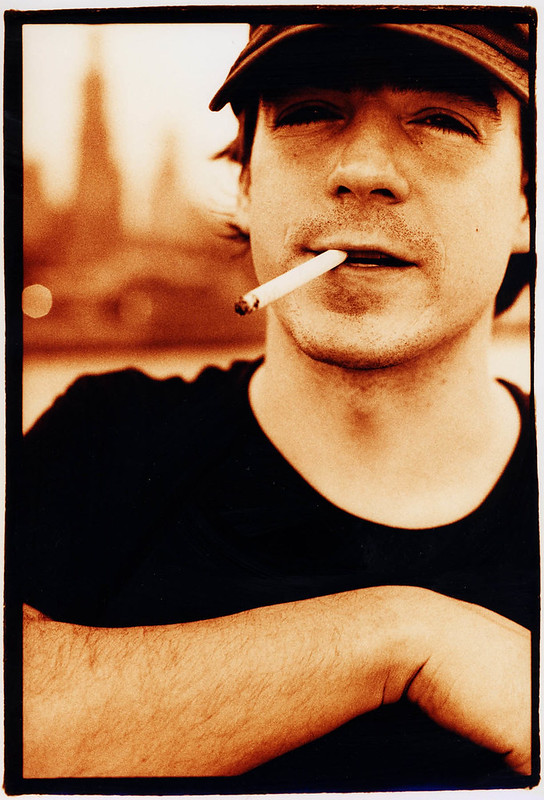
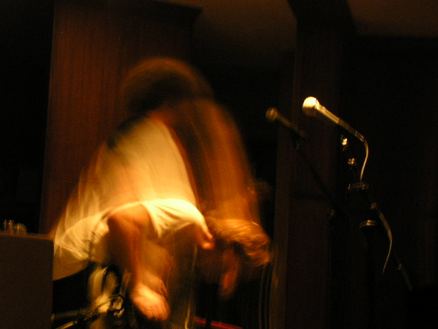
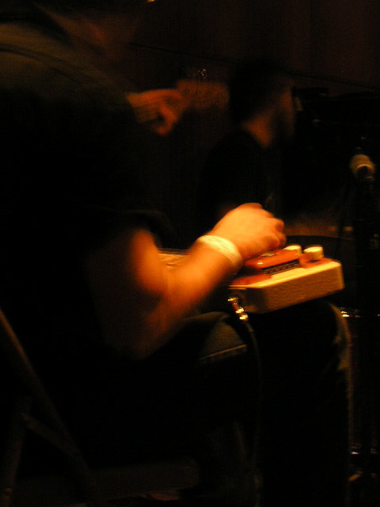

It'll get so quiet when this record ends
Jason Molina + Magnolia Electric Co.
Jason Molina was a musician mainly active throughout the late 90s/early2000s. He's released a lot of music under many different names with a revolving cast of talented musicians, but his most well known material was released as Songs:Ohia (later renamed to Magnolia Electric Co).
I don't know the full details of Jason's personal life so I won't go into it too much, but he struggled with alcoholism for most of the decade after 2003 which led to him cancelling tours in 2009 and eventually dying of multiple organ failiure on March 16th, 2013 at 39 - supposedly with nothing but a cell phone in his pocket with only his grandmother's number on it.
Magnolia Electric Co.

In 2003 Songs:Ohia released (the) Magnolia Electric Co. which is one of my favorite albums ever, I love it dearly it means a lot to me. It's not like a lot of the other music I listen to, being a sort of alternative country/indie rock album. It's a really huge sounding record with a full band behind it but despite this it manages to be very personal, with Jason staying firmly at the center of it all. His powerful lyricism and dynamic vocals manage to make it feel incredibly intimate and impactful.
I'm dont understand the common sentiment "I like all music except country". Maybe it's different for americans growing up around that sort of music, but I've personally never had a problem with it (not that I would consider myself a massive country music fan). I think this album is a perfect example of how the sounds of country music like slide guitars, slapback delay, chord organs and twangy country vocals can be incredibly emotional and create a familiar yet tragic atmosphere when used right. After initially hearing this record I was compelled to go out and buy a glass slide, which I broke and cut my foot on.
Songs
Every song on this is great so its hard to single out any but I did it anyway for convenience.
Farewell Transmission
Probably Songs:Ohia's most well known song. It opens with a relaxing and laidback (but iconic) guitar riff with a restrained drumline plodding alongside it. But just as you think you know what you're in for the song suddenly opens up. It feels like it has a lot of momentum to it, which I love in a song. The next 7 minutes feel like you're going on a sort of journey which culminates in one of my favorite song closings ever. Also the slide guitar all over is amazing.
Just Be Simple
One of the more country sounding songs on this album (see The Old Black Hen). The lyricism on this one is some of my favorite on the entire album. The song feels resigned, like the feeling of relapsing back into a bad habit or giving up on something. It ends with Jason's pleas for life to "Just be simple again" followed by a heartwrenching slide guitar.
Almost Was Good Enough
One of the louder songs on the album, it has these two overdriven twangy guitars creating an energised atmosphere on either side of you while an organ of some kind pulls you along. It's hard to explain what makes this song so impactful but Jasons wails of "Almost no one makes it out" make it feel very tragic and genuine.
Hold On Magnolia
Easily the most hearbreaking song on the album. It's a slow and grim ballad drenched in an atmosphere of surrender and it really pulls you under. The song briefly rises up at the end only to settle back down as if its accepting its fate or something.
My favorite song is probably The Big Game is Every Night. Though technically a bonus track, it sort
of feels like the antithesis to Farewell Transmission - the fairly upbeat song that opened the album.
It's quite long at 9 minutes, but like most of the tracks on the album it really sucks you into it.
It feels grand, like Farewell Transmission, but in a dark and oppressive way and this is reflected in the
lyrics.
Jason Molina was a fantastic lyricist and here are some of my favorites from this album.
I will resurrect it, I'll have a good go at it
I'll streak his blood across my beak
Dust my feathers with his ash
I can feel his ghost breathing down my back
(Farewell Transmission)
You'll never hear me talk about one day getting out
Why put a new address on the same old loneliness
And everything you hated me for…
Honey, there was so much more
I just didn't get busted
(Just Be Simple)
It'll get so quiet when this record ends
You can hear the first hour of the world
You can hear the willow branches touch the wave
Write our names beside our darlings hearts
I am the snake, they're all saying
If they look up here, do they see just my black tail swaying?
If I'm all fangs, and all lies, and all poison
If I'm really what they're saying
I don't want to disappoint them
(The Big Game is Every Night)
Rest in peace
